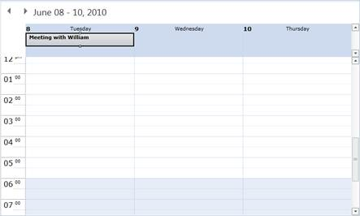

Appointments in time slots or day headers (all-day appointments) can be dragged. The schedule control will change the appointment to a time-slot or an all-day appointment according to where it is being dropped.

Figure 17: Appointment Dropped on Header